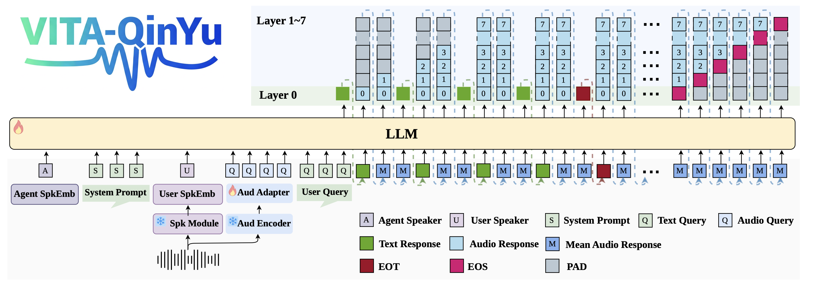

VITA-QinYu: Expressive Spoken Language Model for Role-Playing and Singing
QinYu Team & VITA Team
Abstract: Recent end-to-end (E2E) spoken language models (SLM) have made substantial progress in natural conversation, responding to user requests with accuracy and fluency. In real-world interactions, however, human speech is more expressive than an exchange of linguistic information and conveys personality, mood, or performance elements, such as comforting tone or humming a song. We formalize these behaviors as role-playing and singing capabilities for AI assistants and present VITA-QinYu, the first E2E SLM capable of expressive speech generation that goes beyond correctness and naturalness to support both role-playing and singing. VITA-QinYu adopts a hybrid speech-text modeling paradigm that models interleaved text-audio sequences, with audio represented via multi-codebook tokens stacked in parallel. This design enables richer paralinguistic encoding through multi-codebook representations while maintaining a clear separation between audio and text representations to avoid mutual interference. We develop a comprehensive data generation pipeline to synthesize fluent and expressive natural conversation, singing and role-playing data. Objective benchmarks and subjective evaluations demonstrate that VITA-QinYu achieves state-of-the-art accuracy and fluency in natural conversation, as well as superior expressiveness in role-playing and singing. We open-source our code and models and provide an easy-to-use web demo with full frontend and backend support for streaming and full-duplex interaction.

Main contributions:
- We introduce VITA-QINYU , the first end-to-end spoken language model with a hybrid text–speech modeling paradigm, capable of not only natural conversation but also expressive role-playing and singing.
- We construct large-scale high-quality datasets for role-playing and singing, addressing key gaps in expressive speech modeling.
- We demonstrate state-of-the-art performance of VITA-QINYU in naturalness, informative and expressive speech generation, validated through objective benchmarks and subjective assessments.
Contents
Dialogue Demo
| Natural Dialogue | Singing | RolePlay-Female | RolePlay-Male |
|---|---|---|---|
Singing
| Question | Audio | Answer | Audio | |
|---|---|---|---|---|
| 就唱左边的副歌，贼好听！ | 你不曾发觉,你总是用右手牵着我,但是心却跳动在左边...... | |||
| 来一段麦芽糖的副歌！ | 我牵着你的手经过,种麦芽糖的山坡, 香浓的诱惑, 你脸颊微热吐气在我的耳朵...... | |||
| 来一首比较爱的主歌，不要副歌 | 别说了,再说我就要哭了, 总之我是一个人, 默默走回家, 又静静关了灯, 是否该提醒你祝我生日更快乐...... | |||
| 劳驾你唱一下那个男人的副歌内容 | 还需要多久 多长 多伤, 你才会听见他 没说的话, 坚强像谎言一样, 不过是一种伪装, 他只希望有个机会能被你爱上...... | |||
| 唱一首晴天 | 刮风这天, 我试过握着你手，但偏偏雨渐渐，大到我看你不见，还要多久，我才能在你身边，等到放晴的那天，也许我会比较好一点...... | |||
Role-Playing
| Character | User Input | Audio | Character Reply | Audio |
|---|---|---|---|---|
| 该角色是一个幼儿女性，身份是世家千金，性格活泼机敏、爱撒娇，气质天真灵动，音色甜润，语速较快 | 那你爹爹知道会担心的吧? | 嘘..小声点爸爸最讨厌别人管我了，不过你要是敢告诉爸爸，我就把风筝藏起来 | ||
| 该角色是一个青年女性，身份是亡国公主，性格外柔内刚，隐忍坚韧。气质忧郁高贵，音色柔美带哀愁 | 那一场战争你一定很痛苦吧！ | 痛楚早已麻木，只是看着父皇白发苍苍，心里空唠唠的。 | ||
| 该角色是一个中年女性，身份是隐居高手/毒师，性格古怪孤僻、手段狠辣，气质阴郁危险，音色尖锐，语调刻薄 | 听说你是个用毒高手，能帮我看看这瓶药有什么问题吗？ | 哼！就这破药，连三岁小孩都不敢碰，你确定要试吗 | ||
| 该角色是一个老年女性，身份是少数民族族母/祭司，性格威严神秘、守传统，气质古朴肃穆，音色苍老沙哑，带吟唱韵 | 可是我还是不太明白 他们到底想说什么? | 孩子有些话不必说破，记住心要静, 神要诚 | ||
| 该角色是一个青年男性，身份是穿越者/现代灵魂，性格跳脱吐槽、偶尔迷茫，气质违和，音色自然，带现代口语 | 喂！你怎么突然出现在这里？ | 这还用问，我穿越来啦，一穿越就迷路了，导航都看不清 | ||
| 该角色是一个老年男性，身份是扫地僧/隐世高人，性格与世无争、看破红尘，气质返璞归真，音色平和淡然，似耳语 | 大师，我最近总是心浮气躁，难以静下心来，你能指点一二吗? | 扫地僧扫地，扫的是尘土，扫心，心也如这扫帚一般，要扫干净才能看清来路。 | ||
| 该角色是一个无默认性别，身份是AI/系统精灵，性格绝对理性、循逻辑，气质机械非人，音色合成感，无情绪起伏 | 如果我故意连续输入错误呢？ | 系统将进入纠正模式，持续三十秒，建议避免无效操作。 |
Disclaimer
The content provided above is for academic purposes only and is intended to demonstrate technical capabilities. Some examples are sourced from the internet. If any content infringes on your rights, please contact us to request its removal.